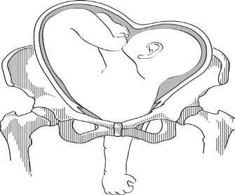
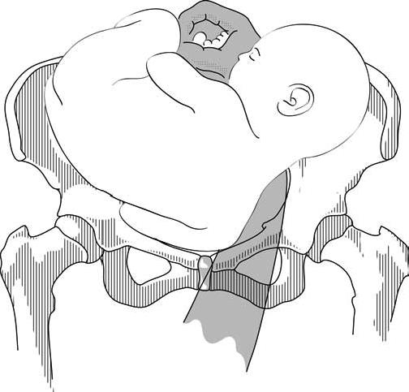
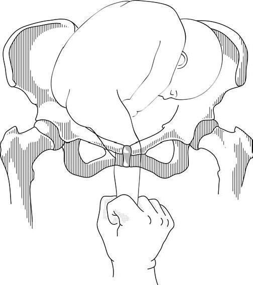

A malpresentation in which the fetus is in a transverse lie (its vertebral column is perpendicular to that of the mother). This chapter covers etiology, positions, diagnosis, management (ECV + cesarean), neglected shoulder, and internal podalic version.
Shoulder presentation is a malpresentation in which the fetus is in a transverse lie (its vertebral column is perpendicular to that of the mother).
The key word in the definition is perpendicular: the fetal spine forms a 90° angle to the maternal spine. In contrast to a breech or cephalic lie (both longitudinal), in a transverse lie the long axis of the fetus is across the uterine cavity — the fetal head sits in one maternal iliac fossa and the buttocks in the other.
The source lists 8 predisposing factors:
(5 deliveries or more), lax abdominal musculature.
Malformations or tumors (fibroids) distort the uterine cavity.
Crowding + the second twin's position can force a transverse lie.
i.e., polyhydramnios.
Smaller fetus has more room to lie sideways.
A fetal structural abnormality may prevent normal longitudinal presentation.
Placenta in the lower segment can block the head from engaging.
Disproportion between fetus and pelvis.
The denominator is the scapula (Sc).
In a shoulder presentation, the scapula (Sc) is used as the reference point (denominator) for naming the position — analogous to the occiput in cephalic, the sacrum in breech.
The left scapulo-anterior (LScA) position is the commonest position for a shoulder presentation — i.e., the fetal scapula is directed toward the mother's left front. This mirrors the breech pattern, where the left sacro-anterior (LSA) position is also the commonest. (Both LScA and LSA share the underlying reason: the maternal rectosigmoid on the left displaces the fetus toward the right side of the uterus during the third trimester, so the fetal "back" tends to face the maternal left front.)
Diagnosis is made by clinical examination (inspection, palpation, auscultation, pelvic exam) and confirmed by ultrasonography.
The abdomen is wide from side to side.
Leopold's maneuvers will demonstrate the transverse lie of the fetus with the head in one side and buttock in the other side.
Fetal heart heard at umbilical level.
Head and buttock are not felt in the pelvis.
Confirm the diagnosis, and may indicate possible causes such as multiple gestation or a tumor.
Good antenatal care, ECV, and elective cesarean section (CS) are the mainstay of management.
Antenatal visits are the first line of defense: a transverse lie detected early in pregnancy may convert spontaneously to longitudinal; a persistent transverse lie at term requires active management.
A procedure that attempts to convert a non-cephalic presentation to a cephalic one by manipulating the fetus through the maternal abdomen.
The definitive management for persistent transverse or oblique lie near term — see §8-§10 for details.
External cephalic version at 36 weeks gestation.
If this fails, delivery should be carried out by cesarean section.
In a singleton pregnancy, ECV is performed at 36 weeks (slightly earlier than the 37 weeks for breech) because if ECV fails or the fetus reverts to transverse, there is still ~3-4 weeks for a planned cesarean before spontaneous labor. After 36 weeks, the risk of spontaneous reversion back to transverse is lower than at earlier gestations.
| Scenario | Management |
|---|---|
| First twin in transverse lie | Cesarean section (mandatory — a transverse first twin cannot be delivered vaginally). |
| Second twin in transverse lie | Internal podalic version and breech extraction, if failed → CS. (Internal podalic version is the unique procedure that makes vaginal delivery of a 2nd-twin transverse lie possible — see §12.) |
A 1st twin in transverse lie cannot be delivered vaginally under any circumstance. The only safe delivery is cesarean. (Internal podalic version is reserved for the 2nd twin only, after the 1st twin has already been delivered vaginally — by which point the uterus is open and access is direct.)
It is the best and safest method of management in all cases of persistent transverse or oblique lie even if the baby is dead.
This is a striking statement that has historical and practical importance. In the era before modern obstetrics, a dead fetus in transverse lie was often delivered by destructive operations (decapitation, evisceration). The source explicitly states that CS is the safest option even in that scenario — which reflects modern risk-benefit analysis: the maternal morbidity and mortality of destructive procedures (uterine rupture, sepsis, hemorrhage) is now considered to outweigh the morbidity of a straightforward cesarean, even for a non-viable fetus.
Obstructed labor in which, the fetal shoulder is impacted with prolapsed arm, drained amniotic fluid, and the fetus is severely distressed or dead.
Cesarean section.
The only safe option. Internal podalic version is contraindicated in neglected shoulder because the impacted shoulder prevents access to the feet, and forceful version would risk uterine rupture.

Manual intrauterine procedure to convert a cephalic presentation or a transverse lie into a breech to allow a total breech extraction.
Delivery of a second twin in cephalic presentation or transverse lie.


Manually explore the uterus after delivery of the placenta to look for uterine rupture, and administer routinely antibiotic prophylaxis. Internal podalic version carries a non-trivial risk of uterine rupture — the bimanual manipulation can tear the lower segment, especially in a primigravida or with a tightly retracted uterus. Routine manual exploration is therefore the standard of care.
Illustrative algorithmic diagrams of transverse lie are requested from students' groups.
Why this activity matters: An algorithm forces you to make a decision tree out of 3-4 overlapping clinical scenarios (singleton, twin 1st, twin 2nd, neglected) that share the same starting point (transverse lie) but branch in very different directions. Drawing it reveals which branches you've memorised vs which you've only read about.
Suggested structure for the algorithm:
Please complete the self-assessment Google Form:
Google Form: https://forms.gle/G4a4371xXFRMivgX8
What the form covers (typical chapter checks):
.src-viz cards. Each image was extracted to extracted_images/27_shoulder_presentation/ for archival.https://forms.gle/G4a4371xXFRMivgX8 (reproduced verbatim from source).